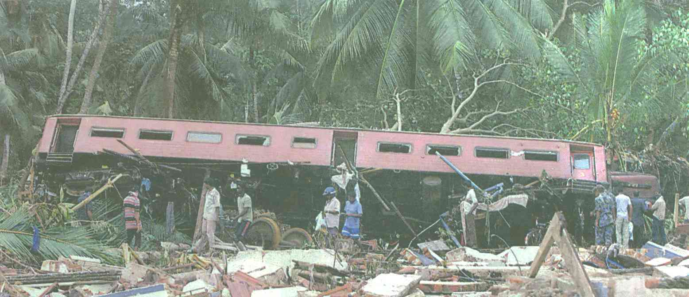

The tsunami disaster, 26th December 2004, has brought forth International devastation, innumerable tragedies, unimaginable grief, inexpressible anguish -- but Thank God there is still hope in Christ Jesus, brethren, please, please cling desperately to Hope.
Hebrews 6:19-20
We have this hope--like a sure and firm anchor of the soul--that enters the inner sanctuary behind the curtain.
Jesus has entered there on our behalf as a forerunner, because He has become a "high priest forever in the order of Melchizedek."
John 14:1-3
“Do not let your hearts be troubled. Trust in God; trust also in me. In my Father's house are many rooms; if it were not so, I would have told you. I am going there to prepare a place for you. And if I go and prepare a place for you, I will come back and take you to be with me that you also may be where I am.
There is another comforting scripture that we urgently need to meditate on, during this desperate hour.
John 14:16,18
And I will ask the Father, and He will give you another COMFORTER (Counsellor, Helper, Intercessor, Advocate, Strengthener, and Standby), that He may remain with you forever.
I will not leave you as orphans [comfortless, desolate, bereaved, forlorn, helpless]; I WILL COME [BACK] TO YOU.

This train called, The Queen of the Sea, was nearing its destination, after travelling through it's beautiful coastline, when the waves, the awesome Tsunami knocked it sideways. Up to 1,500 people were crammed inside the train as it travelled 75 miles (110km) along the Sri Lankan coastline from Colombo to the southern city of Galle. The train was flung from its tracks in Telwatte, south of Colombo. We made a phone call to Sri Lanka to talk to a friend of ours, a Doctor from London who works as a General Practitioner in South London. He went with his family to Colombo to celebrate his son's engagement. He told us his precious sister and his niece were on this train. They had come all the way from Chicago, USA, to attend his son's engagement. It was shattering news when he informed us that his dear sister died. We convey our deepest condolences and our prayers to her Reverend, (Pastor) husband and his family.
The miraculous escape of his niece from this zone of disaster is breathtaking. God the Holy Spirit was kind to me when he made sure that this particular piece of news just happen to be broadcast on our television at the same time whilst I was in our living room. I would have completely missed this news, had I left the room earlier. This news was not repeated again. A young man was being interviewed by a broadcaster on BBC News 24, and he mentioned the following. Shenth Ravindra from Crawley, Sussex, England, told the BBC audience how he escaped from his carriage onto a house and than walked two kilometres to receive treatment for his lacerated leg. What caught my attention was when he mentioned the name of the niece and the name of a lady from Finland. He actually helped the niece to escape this massive wall of water heading towards them. He said they were on the top of a roof and they had no choice than to dive into the water to escape the incoming wave, (to quote him, the dynamics of the horizon changed when they saw the wave coming), for he was concerned the house with the roof might collapse if they did not take evasive action. Once they did this, it was the niece who took them to her Uncle's home.
We are grateful for the Mercies of our Lord, for it was on the same day the 26th of December 2004, that my brother Sylvester Nicholas, his wife Juliana and their 3 children with thousands of other Malaysians decided to go to the lovely sunshine beach for a picnic and a swim. It was the day after Christmas, Boxing Day and also a Sunday, which made the circumstances and atmosphere perfect to go for a picnic. The beach they decided to go to was in Port Dickson, in the State of Negri Sembilan, West Malaysia. We acknowledge our grateful thanks to our Living God, that this awesome Tsunami did not reach the shores of Port Dickson. Although the mighty waves did penetrate the beaches at Penang, West Malaysia and whole families had gone missing there.
Whilst I am prayerfully writing this daily reading I am very aware of a daily reading I wrote a year ago, the theme being, that daily we ought to pray for our Lord’s Wisdom and for His Protection. Do not take any day for granted, please do read this page.
We need God The Father to supernaturally warn us about the dangers that are going to happen or bring circumstances to play that will hinder us from going to the place of danger and death. If the worst scenario happens, i.e ( we have completed our mission, course, journey and the calling of God on this earth) and the time of departure for us has finally arrived, we will than exit the face of this earth and be transferred/ translated to the Kingdom of Heaven, we will go towards the Throne Room, accompanied by our personal Angels and maybe by our Precious Departed ones, ( our family members) who have gone before us, the Bible calls them, ( A great cloud of witnesses. Hebrews 12 verse 1) to meet our Precious Lover, God and Saviour. He is The King of Kings, Jesus Christ our ultimate and complete Lover where death, decay and corruption will not face us anymore. Glory Be to God!
THE Earthquake brought intense sorrow to the below mentioned countries

This event has literally shaken the earth in it's axis.
How do we comfort the comfortless?
There are many precious people in various parts of the world weeping and wailing loudly, for they have lost their loved ones.
We attended a Prayer service yesterday at the Methodist Central Hall, Westminster, London, the 1st of January 2005 (that’s how our New Year commenced, PRAYING). This building has got a lot of history behind it. It’s also centrally positioned across the road from Westminster Abbey and the Houses of Parliament. It was a form of a prayer and praise vigil for all the families who have lost their loved ones through the Tsunami disaster. A leading Methodist evangelist, Rob Frost, commented to us that the BBC, CNN and Sky News were a part of the media covering this prayer event. Some portions of this event was broadcast, " live." We will continue to pray.
We are still meditating and reflecting on what Olave Snelling, a Premier Radio presenter shared through her tears and weeping, the below are some parts of all our thoughts.
We are living in the days of the birth pangs that will culminate in the second coming of Jesus Christ.
Matthew 24:7-8
Jesus Foretold
7) For nation shall rise against nation, and kingdom against kingdom: and there shall be famines, and pestilences, and earthquakes, in divers places.
8) All these are the beginning of sorrows. --------( ------, All this is but the beginning [the early pains] of the birth pangs [of the intolerable anguish].
Romans 8:22
We know that the whole creation has been groaning as in the pains of childbirth right up to the present time.
Revelation 21:6
He said to me: “It is done. I am the Alpha and the Omega, the Beginning and the End. To him who is thirsty I will give to drink without cost from the spring of the water of life.
Posted 26th May 2014. A Solemn Word for 2015. Please digest!
Clarity is enhanced by viewing the 3 minute video below. The key Word needs to be captivated. It is mandatory to make your prayer time exciting. This will pull down, demolish and dismantle the strategy of the evil kingdom on your life.
Seriously engage with this 3 minute short video clip for in 2015 the forces of hell want to vent and manifest their fury. It has already commenced. It is not a battle between nations, people, religion or ethnicity. It is actually a vicious battle between Kingdoms. It is Kingdom against Kingdom.
Our families need to be preserved and protected.
Do view the two short videos posted below pertaining to the above, 2015 Word.
They will encourage you on how to be ready. It is compelling viewing.